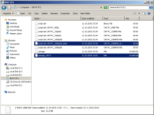

Как создать загрузочную флешку Ubuntu Mate для Orange Pi PC из Windows
01.11.2016Orange Pi проектыКомментарии: 5
Содержание
Загрузочная флешка Ubuntu 15.04 с Mate Desktop
В данной статье мы ответим на вопрос как сделать загрузочную флешку для Orange Pi PC и запустить её?. Почти все, кто покупает себе Малинку, Банану или Апельсинку, сталкиваются с этой проблемой. Но, как не странно, не такая уж это и проблема, всё очень просто и доступно. Не очень давно сделал маленькую статью о том, как установить linux на SD карту для Banana Pi M3 (или загрузочная флешка Ubuntu). Но, после того как купил себе Orange Pi PC, не заметил больших отличий в прошивки аппаратов, за исключением некоторых деталей из за них я решил запилить новый пост.
Внимание:
Если вам нужно сделать загрузочную флешку Андроид, переходите на страницу Установка Android на Orange Pi/Banana Pi/Raspberry Pi
В основном, установка linux операционных систем одинакова, что для Banana Pi, что для Raspberry Pi, так и для Orange Pi.
Внимание:
Без радиатора лучше не запустить, греется сильно!!!11
Как скачать Ubuntu Mate для Orange Pi PC
Смотрите ещё:
Ubuntu MATE 16.04 LTS для Orange Pi с GPU & VPU драйверами. Бета
- Переходим на официальную страницу Orange Pi;
- Из главного меню выбираем: Resources -> Downloads;
- На данной странице мы видим модели Orange Pi и список операционных систем, которые могут быть установлены на соответствующий Апельсин. В нашем случае это Ubuntu 15.04 with Mate Desktop релиз 2015-09-19. И так, нажимаем на кнопку Download Now и мы переходим на страницу где мы сможем этот Ubuntu скачать;
- Здесь, в Download from Mega or Google Drive, выбираем что нам удобно, я качаю с Гугл Диска;
- На странице Google Drive ищем OrangePI-PC_Ubuntu_Vivid_Mate.img.xz и scriptbin_kernel.tar.gz, рекомендую воспользоваться Ctrl+F;
- И скачиваем Ubuntu и и scriptbin_kernel.tar.gz;
Как создать загрузочную флешку Ubuntu Mate для Orange Pi PC из Windows
- Распакуйте архив OrangePI-PC_Ubuntu_Vivid_Mate.img.xz;
- Вставьте SD-карту в ваш компьютер. Размер SD карты должен быть больше 4 Гб, как правило, 8 Гб или больше. Класс 4 или выше, и отформатируйте SD-карту.
- Далее запускаете утилиту Win32Diskimager и, в поле «Image File», указываем путь к IMG образу OrangePI-PC_Ubuntu_Vivid_Mate.img, а в раскрывающемся меню «Device» укажите букву SD-карты и нажмите на кнопку Write;
- Подтвердите операцию нажимая Yes;
- После завершения программа будет показать следующее сообщение: Write Successful;
- Закройте программу Win32Diskimager нажимая на Exit;
- Можете вставить СД карту в Orange Pi.
Настройка Ubuntu Mate при первом запуске Orange Pi PC
- По окончанию вынимаете карту и вставляете обратно. Она монтируется с двумя разделами linux и BOOT, идем в BOOT!
- Копируете туда файлы script.bin.OPI-PC_1080p50_hdmi и uImage_OPI-2 из скаченного ранее scriptbin_kernel.tar.gz.
- Переименовываете файлы: uImage_OPI-2 в uImage и script.bin.OPI-PC_1080p50_hdmi в script.bin — у меня монитор на 1080p;
- Вставьте SD-карту в OrangePi PC и запустите его;
- После загрузки надо выполнить следующую команду
sudo fs_resize
- Перезагрузите аппарат.
- Всё!